Ch03 Bioenergetics of Exercise and Training
3.1 Essential Terminology
Introduction
Bioenergetics is fundamental to understanding how our bodies generate and utilize energy, particularly during physical activity. It delves into the processes by which macronutrients—carbohydrates, proteins, and fats—are converted into usable energy forms. This conversion involves intricate chemical reactions, where the breakdown of chemical bonds within these nutrients releases the energy necessary for biological work. The concepts of catabolism and anabolism are central to bioenergetics, describing the opposing processes of molecule breakdown and synthesis, respectively.
The molecule adenosine triphosphate, or ATP, plays a pivotal role in energy transfer within biological systems. It acts as an intermediary, shuttling energy from catabolic reactions to drive anabolic ones. Understanding ATP hydrolysis, the process by which ATP releases energy, and the enzymes that catalyze this reaction, such as ATPase, is crucial for comprehending how muscles contract and function. Since muscle cells store only limited amounts of ATP, continuous resynthesis is essential for sustained activity, highlighting the importance of bioenergetics in designing effective training programs.
Essential Terminology
Bioenergetics studies energy flow in biological systems, focusing on macronutrient conversion to usable energy. Breaking down chemical bonds in these nutrients yields energy for biological tasks. Catabolism is the energy-releasing breakdown of large molecules, while anabolism is the energy-requiring synthesis of larger molecules. Exergonic reactions release energy (catabolic), and endergonic reactions require energy (anabolic). Metabolism encompasses all catabolic and anabolic reactions. Adenosine triphosphate (ATP) transfers energy between these reactions. ATP, made of adenosine and three phosphate groups (figure 3.1), releases energy via hydrolysis, catalyzed by ATPase, yielding ADP, Pi, and H+. Myosin ATPase, calcium ATPase, and sodium-potassium ATPase are specific examples. ATP stores significant energy in its terminal phosphate bonds. Because muscle cells have limited ATP, constant production is needed for muscle function.
Summary
Bioenergetics focuses on how biological systems, especially during exercise, convert macronutrients into usable energy. Catabolism breaks down molecules, releasing energy, while anabolism synthesizes molecules, requiring energy. These processes are categorized as exergonic (energy-releasing) and endergonic (energy-requiring) reactions, respectively. Metabolism encompasses all such reactions. Adenosine triphosphate (ATP) is the central energy transfer molecule, enabling energy to move from catabolic to anabolic processes.
ATP's structure, consisting of adenosine and three phosphate groups (figure 3.1), allows it to store and release energy. The process of ATP hydrolysis, catalyzed by ATPase enzymes, breaks ATP into ADP, inorganic phosphate (Pi), and a hydrogen ion (H+), releasing energy for biological work. Because muscle cells store only limited amounts of ATP, continuous resynthesis is vital for sustained muscular activity. Therefore, understanding ATP dynamics is essential for designing effective strength and conditioning programs.
Study Guide Questions
- What is bioenergetics, and how does it relate to macronutrients?
- Explain the difference between catabolism and anabolism.
- What is the role of ATP in biological systems?
- Describe the process of ATP hydrolysis.
- What are the primary sources of energy for muscle contraction?
Study Guide Answers
1. What is bioenergetics, and how does it relate to macronutrients?
Bioenergetics is the study of energy flow within a biological system. It primarily focuses on how the body converts macronutrients (carbohydrates, proteins, and fats) into usable energy.
2. Explain the difference between catabolism and anabolism.
Catabolism refers to the breakdown of larger molecules into smaller ones, releasing energy in the process. Anabolism, on the other hand, involves the synthesis of larger molecules from smaller ones, requiring energy input.
3. What is the role of ATP in biological systems?
ATP (adenosine triphosphate) serves as the primary energy currency of the cell. It allows the transfer of energy from exergonic (energy-releasing) reactions to endergonic (energy-requiring) reactions.
4. Describe the process of ATP hydrolysis.
ATP hydrolysis is the breakdown of ATP into ADP (adenosine diphosphate), inorganic phosphate (Pi), and a hydrogen ion (H+). This process is catalyzed by enzymes like myosin ATPase and releases energy.
5. What are the primary sources of energy for muscle contraction?
The primary sources of energy for muscle contraction are the chemical bonds within ATP and, to a lesser extent, ADP.
The Fundamentals of Bioenergetics
Introduction to Bioenergetics
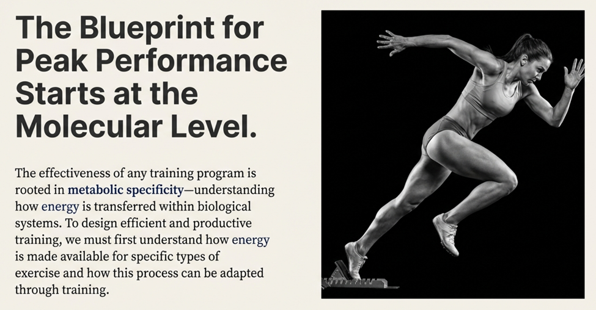
The Study of Energy in the Body
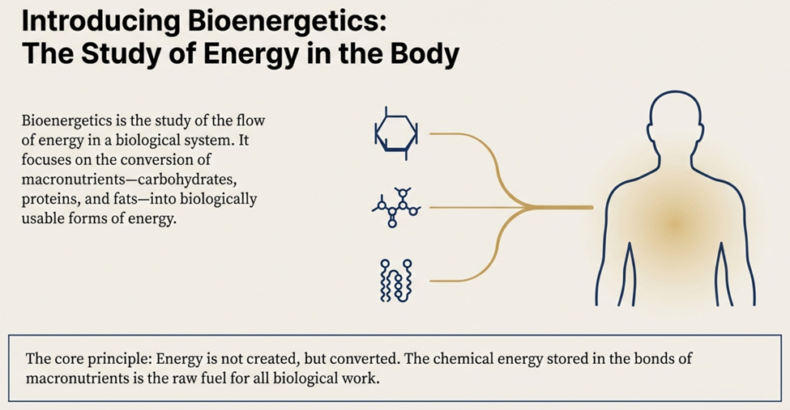
Catabolism
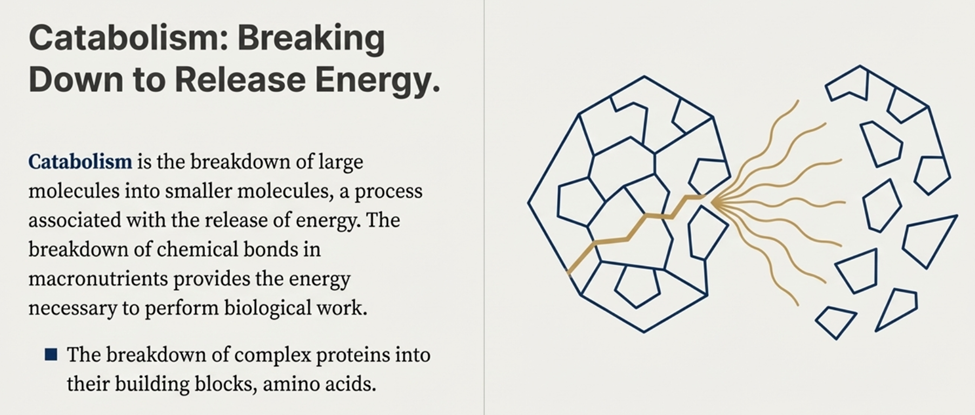
Anabolism
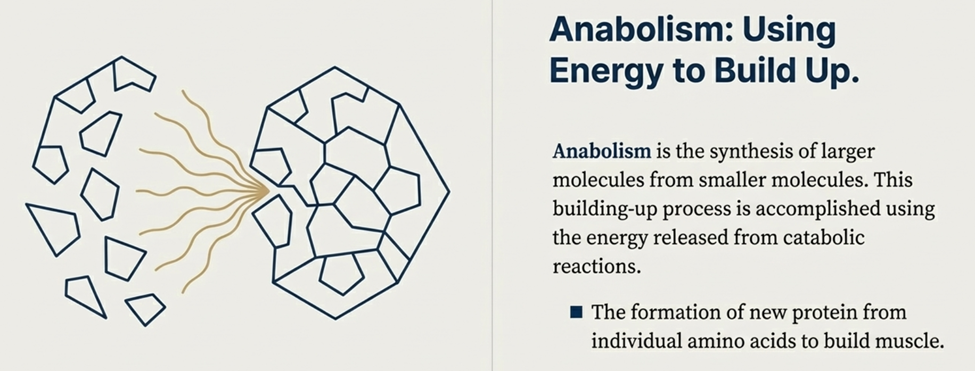
Metabolism
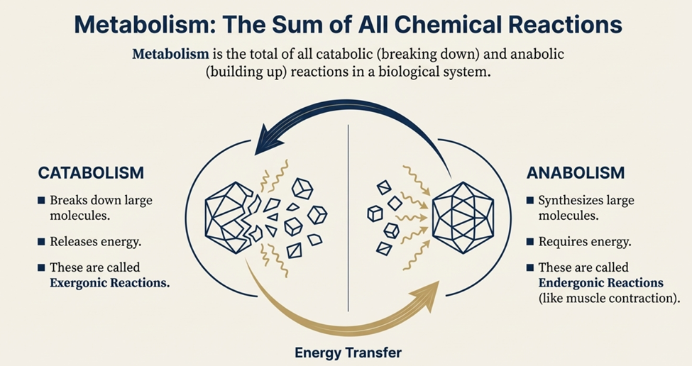
How Energy Travels
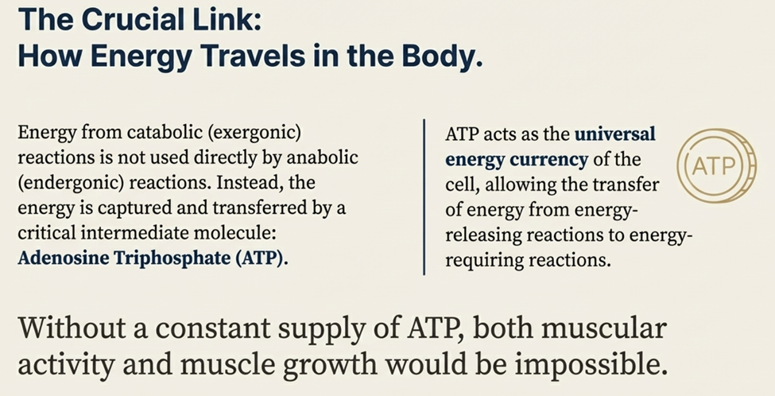
The Anatomy of the Body's Energy Currency
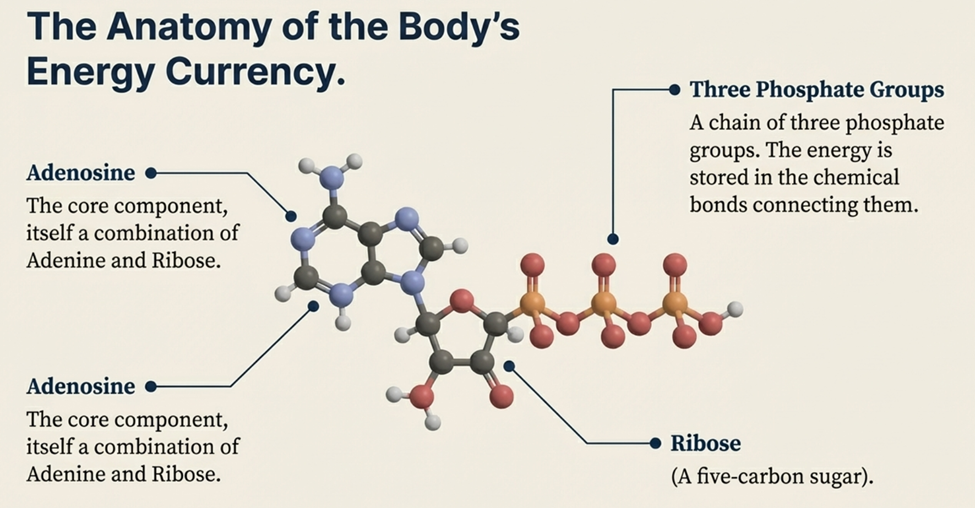
Hydrolysis
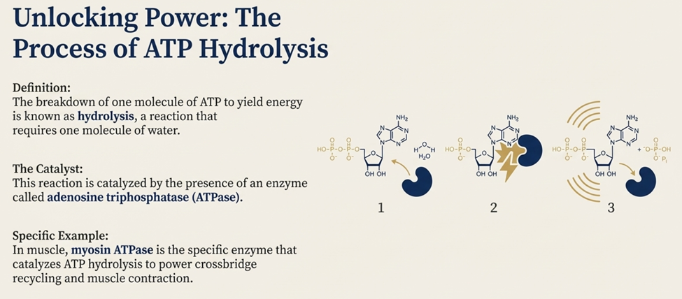
High-Energy Bonds
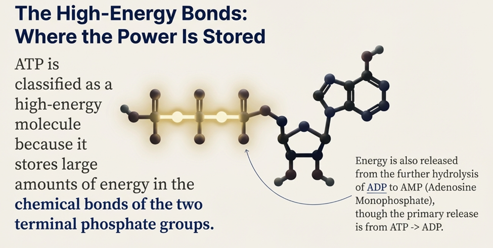
The Reaction that Fuels Movement
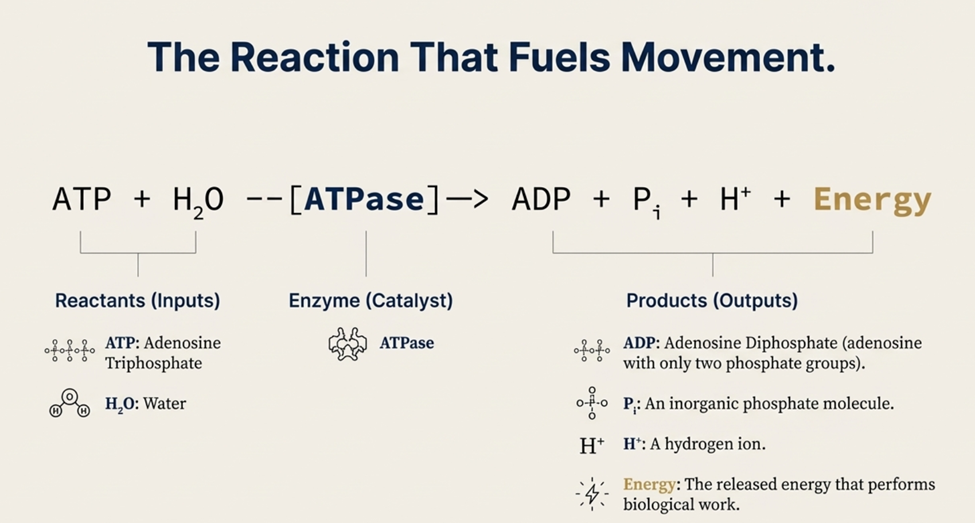
ATP Stores are Limited
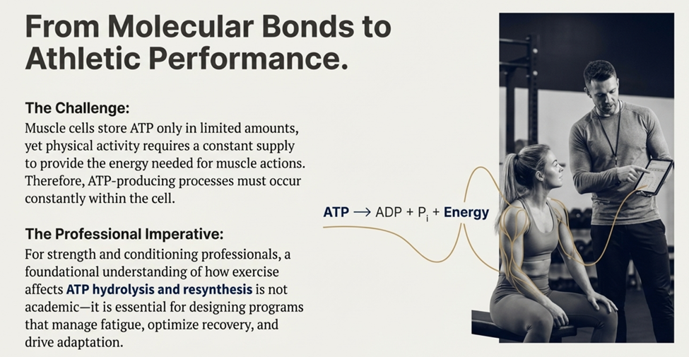